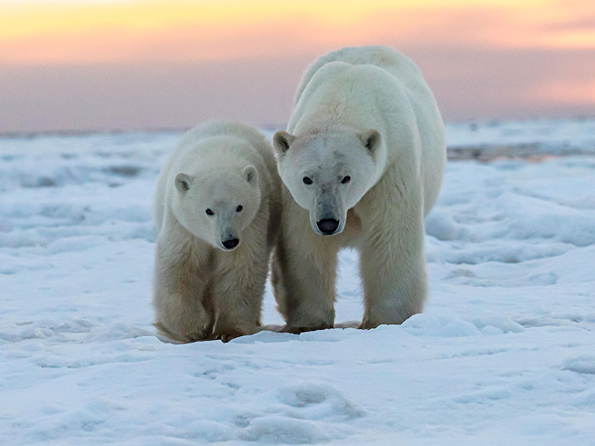
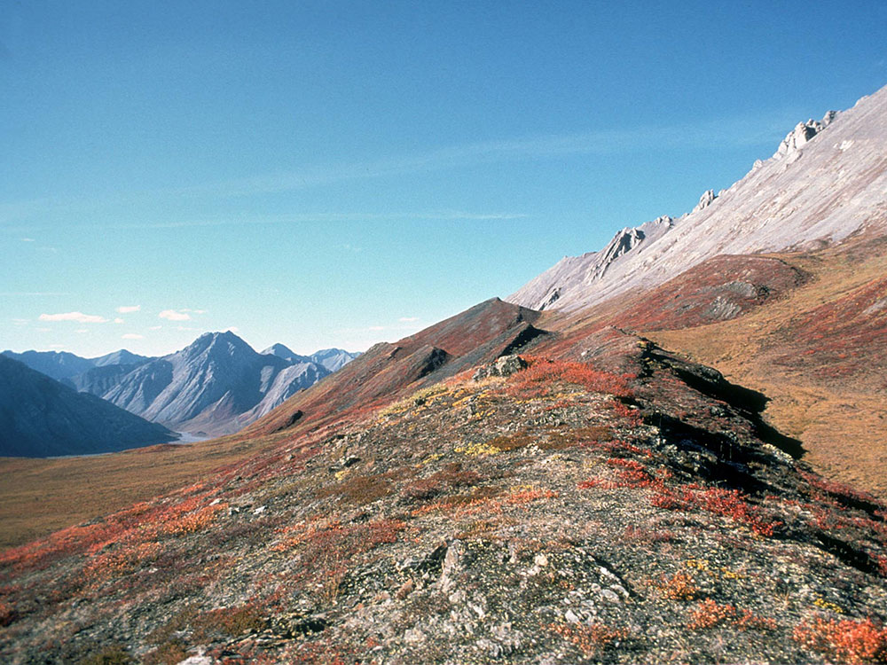
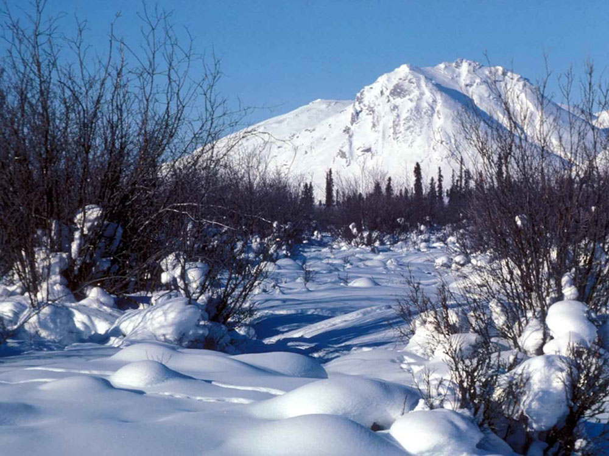

.jpg){kind=link}
Wildlife refuge in northeastern Alaska, is the largest national wildlife refuge in the country, and includes a large variety of species of plants and animals, such as polar bears, grizzly bears, black bears, moose, caribou, and wolves
General Information
How to Get There
From Fairbanks, AK (~200 mi): Drive north on AK-2 (Steese Expressway) to AK-11 (Dalton Highway) approximately 175 miles to Coldfoot, where the Arctic Interagency Visitor Center and bush plane charters to the refuge are available, as no roads enter the refuge itself.
Overview
Arctic National Wildlife Refuge in northeastern Alaska is the largest national wildlife refuge in the United States, covering about 19.3 million acres between the Brooks Range and the Arctic Ocean. It was first protected in 1960 and greatly expanded in 1980, and it protects tundra, boreal forest, braided rivers and the coastal plain where the Porcupine Caribou Herd calves each year. Polar bears, grizzly bears, muskoxen, wolves, Dall sheep and hundreds of thousands of migratory birds live here, and the Gwich'in people have lived on the refuge's edges for thousands of years. There are no roads, trails or visitor facilities, so people come for fly-in rafting, backpacking and a sense of true wilderness found in few places on Earth. Across the border in Canada are Ivvavik and Vuntut National Parks.
Access
The refuge lies in the far northeast corner of Alaska, north of the Arctic Circle, and no roads enter it. The Dalton Highway runs along its western edge, and most trips begin in Fairbanks, about 200 miles to the south, with a charter flight from Fairbanks, Bettles, Coldfoot or Fort Yukon on a small bush plane. Commercial flights serve Kaktovik, the Iñupiat village on Barter Island on the coast, and Arctic Village, a Gwich'in community, from Fairbanks and Utqiaġvik. Most visitors travel with permitted guides or air taxi operators, and independent trips require advanced planning, bear safety gear and wilderness skills. Cell service and emergency help are essentially absent.
Seasons
Summer, from June through August, is the main season for hiking, rafting and wildlife viewing, with nearly continuous daylight from mid-May to late July. The Porcupine Caribou Herd calves on the coastal plain in late May and June, and caribou migrate through the Brooks Range in summer and fall. Mosquitoes can be intense in early summer, and weather can change quickly, with snow possible any month. Fall brings tundra colors, fewer insects and early aurora displays, but rivers drop and temperatures fall fast. Winter is dark and extremely cold, and it is a time for northern lights and dog-sled or ski trips by experienced travelers only.
Things to Do
Explore One of America's Greatest Wilderness Areas
Arctic National Wildlife Refuge covers nearly 20 million acres in northeastern Alaska and is one of the largest protected wilderness areas in the United States. The refuge encompasses the Brooks Range, vast tundra landscapes, Arctic coastal plains, boreal forests, wild rivers, and remote mountain valleys, offering visitors an unparalleled opportunity to experience some of North America's most pristine wilderness.
Visit the Arctic Coastal Plain
The coastal plain is among the refuge's most famous regions, featuring expansive tundra, migratory bird habitat, and sweeping views extending to the Arctic Ocean. During summer, visitors can observe the unique Arctic ecosystem under nearly continuous daylight.
Experience the Brooks Range
The Brooks Range forms the southern backbone of the refuge and contains dramatic mountain peaks, alpine valleys, glaciers, and scenic passes. Outdoor enthusiasts visit the region for backpacking, wildlife viewing, photography, and remote wilderness exploration.
Observe the Porcupine Caribou Herd
The refuge is internationally known for supporting the Porcupine Caribou Herd, one of North America's largest migratory wildlife populations. During seasonal migrations, thousands of caribou travel across the refuge, creating one of Alaska's most remarkable wildlife spectacles.
Watch for Arctic Wildlife
Visitors may encounter musk oxen, Dall sheep, moose, wolves, grizzly bears, black bears, Arctic foxes, polar bears along the northern coast, and numerous other wildlife species. The refuge provides some of the best opportunities in Alaska to observe animals living in an intact Arctic ecosystem.
Experience World-Class River Floating
Several of Alaska's most scenic wilderness rivers flow through the refuge. Multi-day rafting and float trips provide a unique way to explore remote landscapes, view wildlife, and access regions that are otherwise difficult to reach.
Go Backpacking Across Untouched Wilderness
Unlike most national parks and refuges, Arctic National Wildlife Refuge contains virtually no maintained trails. Backpackers navigate independently across tundra, river valleys, mountain passes, and alpine terrain, creating a true wilderness experience rarely found elsewhere in the United States.
Experience the Midnight Sun
During summer months, much of the refuge experiences nearly continuous daylight. Visitors can hike, camp, fish, and observe wildlife at any hour while enjoying the unique phenomenon of the Arctic summer sun.
View the Northern Lights
During fall, winter, and early spring, the refuge's remote location and minimal light pollution provide excellent opportunities to observe the aurora borealis. Colorful displays frequently illuminate the Arctic skies during periods of strong solar activity.
Top Routes and Backcountry Areas
Hulahula River
Length: Typically 80 to 100+ miles depending on itinerary
Elevation Gain: Minimal while floating
Difficulty: Moderate
Originating in the Brooks Range and flowing to the Arctic Ocean, the Hulahula River is one of the refuge's most popular wilderness float trips. Travelers experience mountain scenery, wildlife viewing opportunities, and remote Arctic landscapes throughout the journey.
Kongakut River
Length: Typically 90+ miles depending on itinerary
Elevation Gain: Minimal while floating
Difficulty: Moderate
The Kongakut River is widely regarded as one of Alaska's premier wilderness river expeditions. The route offers access to the Arctic coastal plain, dramatic mountain scenery, and some of the refuge's best wildlife viewing opportunities.
Canning River Corridor
Length: Varies by route
Elevation Gain: Varies
Difficulty: Moderate to Strenuous
The Canning River region provides access to both the Brooks Range and the Arctic coastal plain. Backpackers and river travelers use this area to explore diverse landscapes that include mountains, tundra, wildlife habitats, and scenic river valleys.
Marsh Fork and Upper Canning Backpacking Routes
Length: Typically 10 to 50+ miles
Elevation Gain: Significant in mountain terrain
Difficulty: Strenuous
These remote routes traverse portions of the Brooks Range and are favored by experienced backpackers seeking solitude, mountain scenery, wildlife encounters, and challenging cross-country travel through one of Alaska's most remote landscapes.
Aichilik River Region
Length: Varies by itinerary
Elevation Gain: Varies
Difficulty: Moderate to Strenuous
Located near the eastern portion of the refuge, the Aichilik River area offers expansive tundra scenery, wildlife viewing, and opportunities for both backpacking and rafting adventures in a remote Arctic environment.
Visitor Centers
There are no visitor centers inside the refuge. The Arctic Refuge headquarters and information office in Fairbanks (in the Federal Building downtown) provides maps, trip planning help, regulations and lists of permitted guides and air taxis. The Arctic Interagency Visitor Center in Coldfoot, along the Dalton Highway, offers exhibits and rangers who can help with trip planning in the Brooks Range, and the U.S. Fish and Wildlife Service website has detailed planning information. Kaktovik also has a small community visitor presence during the summer visitor season.
Camping and Lodging
There are no campgrounds, lodges or developed facilities in the refuge, and visitors practice backcountry camping with Leave No Trace principles and bear-resistant food containers. Guided trips provide tents and gear, and some operate base camps. Lodging is available in Fairbanks, which has a wide range of hotels and lodges, and along the Dalton Highway in Coldfoot and Wiseman, which have rustic camps and cabins. In Kaktovik and Deadhorse, limited guest rooms are available, usually booked ahead through tour operators. Chena Hot Springs Resort, outside Fairbanks, is a popular choice for aurora viewing.
This article uses material from the Wikipedia articles and official tourism pages for Arctic National Wildlife Refuge, which are released under the Creative Commons Attribution-Share-Alike License 3.0. Additional information from U.S. Fish and Wildlife Service.




